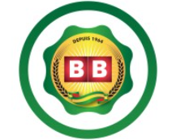
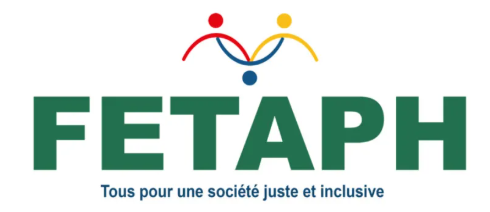
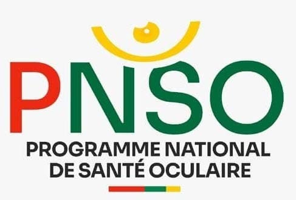
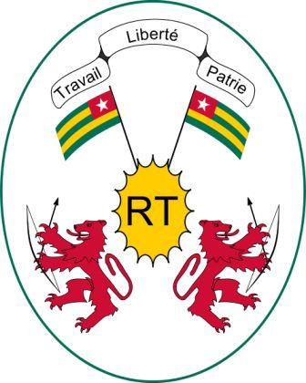
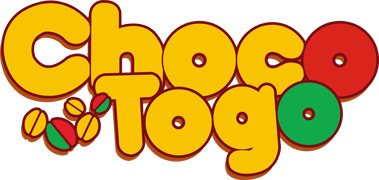
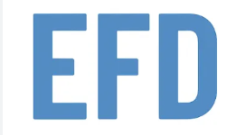
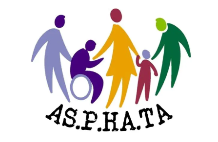

À propos de nous
L'équipe, les valeurs, la méthodologie et les partenaires qui font de Sport Sans Barrières un programme d'inclusion unique en Afrique de l'Ouest.
Rendre le sport accessible à chaque jeune, sans exception
Sport Sans Barrières est né d'un constat simple et inacceptable : en Afrique de l'Ouest, des millions de jeunes en situation de handicap sont privés d'accès au sport, à la formation et à la vie citoyenne. Les Jeux Olympiques de la Jeunesse Dakar 2026 représentent une fenêtre historique pour changer cela.
Notre programme fédère quatre pays — Sénégal, Bénin, Côte d'Ivoire et Togo — autour d'une vision commune : construire un héritage d'inclusion durable, bien au-delà des Jeux.
Inclusion radicale
Aucune activité payante, aucune infrastructure inaccessible, aucun participant laissé de côté.
Excellence sans compromis
Nous croyons que l'ambition et le handicap sont parfaitement compatibles. Nos jeunes visent haut.
Coopération régionale
Quatre pays, une seule dynamique. Le réseau est plus fort que chacun de ses membres pris isolément.
Héritage durable
Chaque action est conçue pour exister au-delà des Jeux. Le programme construit des institutions, pas des événements.
Le programme en chiffres
Des résultats concrets, mesurés et vérifiables.
Les personnes derrière le programme
Une équipe régionale pluridisciplinaire, ancrée dans chaque pays partenaire et unie par la même conviction.
Comment nous travaillons
Diagnostic terrain
Chaque action commence par une enquête locale : besoins des jeunes, infrastructures disponibles, acteurs présents. Rien n'est plaqué depuis l'extérieur.
Co-construction locale
Les activités sont conçues avec les acteurs locaux — associations, fédérations, familles — jamais imposées. Les participants sont co-auteurs du programme.
Pratique et formation
Sessions de para sport, ateliers leadership, formations numériques : toutes les activités combinent pratique concrète et montée en compétences.
Mise en réseau régional
Les jeunes des 4 pays se rencontrent, échangent et construisent ensemble un réseau de pairs qui survivra au programme.
Suivi individuel
Chaque bénéficiaire fait l'objet d'un suivi personnalisé avec indicateurs mesurables : confiance en soi, compétences acquises, insertion sociale.
Transparence & rapports
Tous les rapports d'activités sont publiés en accès libre dans la section Documents. Les bailleurs et partenaires ont accès aux données en temps réel.
Ensemble pour un héritage durable
Sport Sans Barrières existe grâce à un écosystème de partenaires institutionnels, techniques et financiers partageant la même vision.

La Brasserie du Bénin
Soutien financier du programme et appui à son déploiement et à sa pérennisation.
Visiter le site
Fédération Togolaise des Associations des Personnes Handicapées
Expertise technique sur l'inclusion des personnes handicapées, l'accessibilité et l'adaptation des interventions.
Visiter le site
Programme National de Santé Oculaire
Relais opérationnels pour la mobilisation des partenaires, la coordination des actions et l'accompagnement local.
En savoir plus
Ministère de l'Administration Térritoriale
Les 4 ministères partenaires garantissent la légitimité institutionnelle du programme et facilitent l'accès aux équipements publics.
En savoir plus
Choco Togo
Contribution financière aux activités du programme et soutien à leur mise en œuvre.
En savoir plus

Vous voulez faire partie de l'aventure ?
Rejoignez le programme comme bénéficiaire, volontaire ou organisation partenaire.